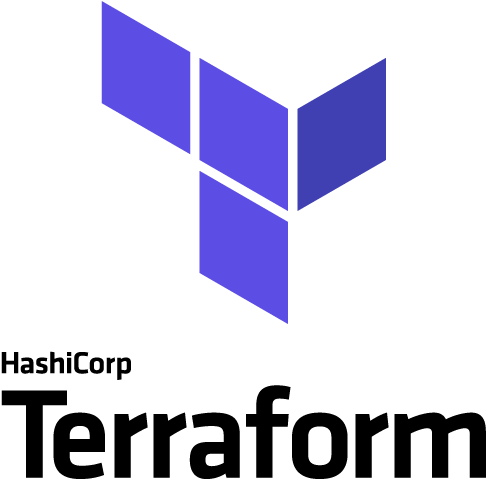
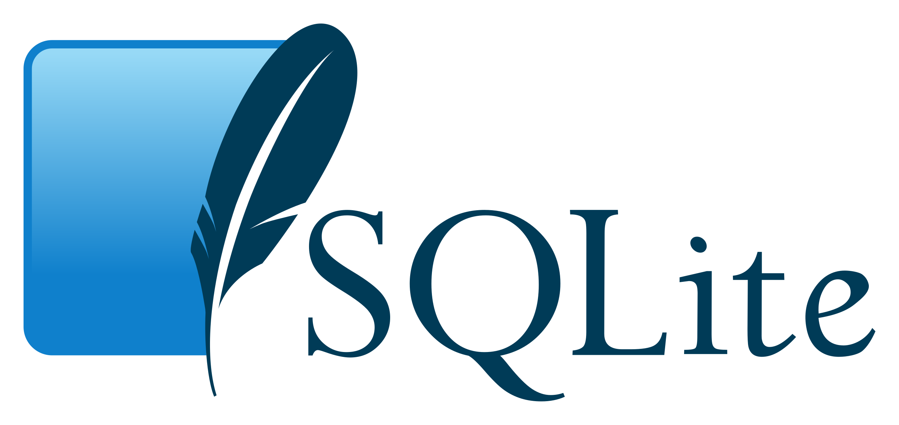
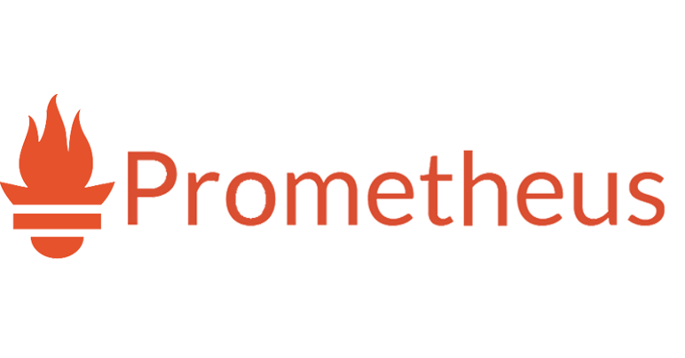
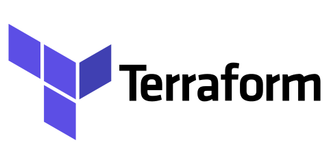

Présentation
Je m'appelle Mehdy Maatit, actuellement en deuxième année de BTS SIO (Services Informatiques aux Organisations),
option SLAM (Solutions Logicielles et Applications Métier) Au lycée Pierre Corneille à la Celle-Saint-Cloud.
Passionné par l'informatique et les nouvelles technologies, je m'investis pleinement dans l'apprentissage et la création de solutions modernes adaptées aux besoins des utilisateurs.
Mon parcours
BTS SIO - Option SLAM (2023 - 2025)
Actuellement en 2ème année du BTS Services Informatiques aux Organisations (SIO), option SLAM (Solutions Logicielles et Applications Métier). J'apprends à concevoir, développer, et maintenir des applications web et logiciels adaptés aux besoins des entreprises.
Alternant chez MAAT-IT (2023 - 2025)
Réalisation de projets en milieu professionnel : développement d'une application de gestion, automatisation de processus avec Terraform, et mise en place de visualisations avec Grafana.
Bac générale (2020 - 2023)
Obtention d'un Bac générale spécialité mathématique et S.E.S (siences économiques et sociales). Ce diplôme m’a permis de poser les bases de mes compétences en informatique et en éconiomie.
Le BTS SIO
Le BTS Services Informatiques aux Organisations (SIO) propose deux options distinctes en deuxième année : l’option SLAM pour les développeurs et l’option SISR pour les spécialistes des réseaux et systèmes.
Option SLAM
L’option SLAM (Solutions Logicielles et Applications Métiers) forme aux métiers du développement. Elle permet d’apprendre à concevoir, développer, tester et maintenir des applications.
Mon optionOption SISR
L’option SISR (Solutions d’Infrastructure, Systèmes et Réseaux) est axée sur les réseaux, la cybersécurité et la gestion des systèmes. Elle forme les futurs administrateurs réseau.
Mes Compétences
En tant qu'étudiant en BTS SIO option SLAM, j'ai acquis une solide base de compétences en programmation, en développement web, et en gestion de bases de données. Voici un aperçu des outils et technologies que j'utilise :


Qu'est-ce qu'une veille technologique
La veille technologique est un processus continu d'observation, de collecte et d'analyse des nouveautés et des tendances dans le domaine des technologies. Elle permet de rester informé des innovations, des outils émergents, des méthodologies, et des bonnes pratiques dans un secteur en constante évolution. En tant que développeur, la veille technologique est essentielle pour anticiper les changements, améliorer ses compétences, et proposer des solutions modernes et adaptées aux besoins des utilisateurs. C'est une démarche proactive qui nourrit la créativité et renforce l'expertise.
Projets

Application Web
Une application dédiée à Cristiano Ronaldo.

Automatisation avec Terraform
Automatisation du séploiment de machines virtuelles avec Terraform.
Populus Bank
Application de gestion banquaire en C#.

Visualisation de données
Visualiser graphiquement les données d'une machine virtuelle avec Grafana.